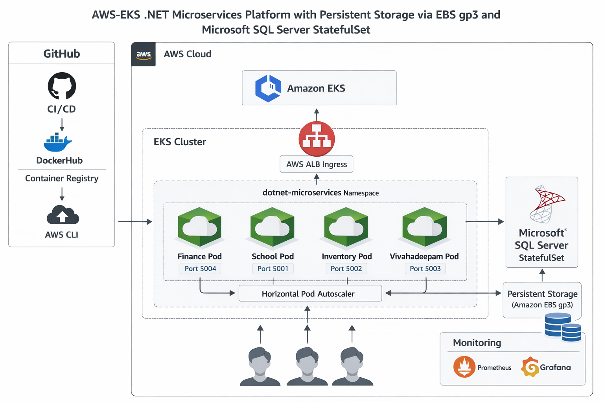

Production-style cloud-native .NET microservices platform deployed on Amazon EKS using Terraform, Kubernetes, Docker, GitHub Actions, and modern DevOps automation practices.
Architecture

Project Overview
This project demonstrates the design, containerization, deployment,
and management of a cloud-native .NET microservices platform on
Amazon Elastic Kubernetes Service (EKS).
The platform consists of multiple business applications deployed as
containerized microservices and orchestrated through Kubernetes.
Infrastructure is provisioned using Terraform, application delivery
is automated using GitHub Actions, and observability is provided
through Prometheus and Grafana.
The project showcases production-grade DevOps practices including
Infrastructure as Code, CI/CD automation, autoscaling, ingress
management, persistent storage, monitoring, and cloud-native
application deployment.
This project demonstrates end-to-end cloud-native application delivery on AWS,
covering infrastructure automation, container orchestration, CI/CD pipelines,
monitoring, autoscaling, and production-ready Kubernetes operations. It
showcases practical experience building and operating scalable microservices
platforms using modern DevOps and platform engineering practices.